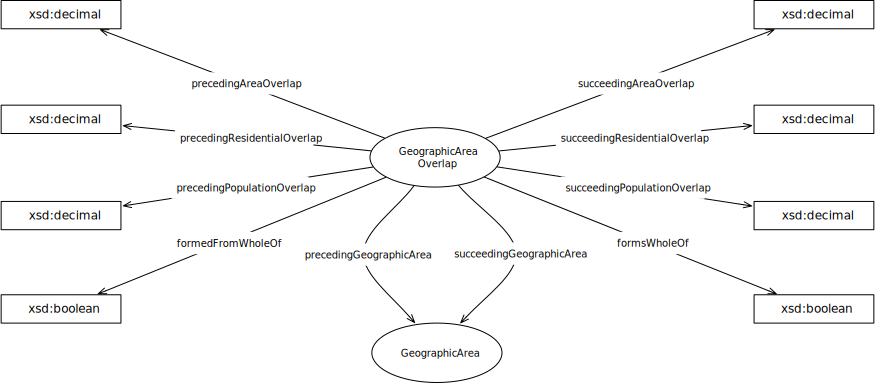

IRI: http://parliament.uk/ontologies/geographic-area-overlap/GeographicArea
IRI: http://parliament.uk/ontologies/geographic-area-overlap/GeographicAreaOverlap
IRI: http://parliament.uk/ontologies/geographic-area-overlap/fromGeographicArea
IRI: http://parliament.uk/ontologies/geographic-area-overlap/fromGeographicAreaGeographicOverlap
This HTML document was obtained by processing the OWL ontology source code through LODE, Live OWL Documentation Environment, developed by Silvio Peroni.